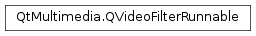

QVideoFilterRunnable¶
Detailed Description¶
The
PySide2.QtMultimedia.QVideoFilterRunnableclass represents the implementation of a filter that owns all graphics and computational resources, and performs the actual filtering or calculations.Video filters are split into
PySide2.QtMultimedia.QAbstractVideoFilterand correspondingPySide2.QtMultimedia.QVideoFilterRunnableinstances, similar toPySide2.QtQuick.QQuickItemandPySide2.QtQuick.QSGNode. This is necessary to support threaded rendering scenarios. When using the threaded render loop of the Qt Quick scene graph, all rendering happens on a dedicated thread.PySide2.QtMultimedia.QVideoFilterRunnableinstances always live on this thread and all its functions,PySide2.QtMultimedia.QVideoFilterRunnable.run(), the constructor, and the destructor, are guaranteed to be invoked on that thread with the OpenGL context bound.PySide2.QtMultimedia.QAbstractVideoFilterinstances live on the main (GUI) thread, like any otherPySide2.QtCore.QObjectandPySide2.QtQuick.QQuickIteminstances created from QML.Once created,
PySide2.QtMultimedia.QVideoFilterRunnableinstances are managed by Qt Multimedia and will be automatically destroyed and recreated when necessary, for example when the scene graph is invalidated or thePySide2.QtQuick.QQuickWindowchanges or is closed. Creation happens via theQAbstractVideoFilter.createFilterRunnable()factory function.
-
class
PySide2.QtMultimedia.QVideoFilterRunnable¶
-
PySide2.QtMultimedia.QVideoFilterRunnable.RunFlag¶ Constant Description QVideoFilterRunnable.LastInChain Indicates that the filter runnable’s associated PySide2.QtMultimedia.QAbstractVideoFilteris the last in the corresponding VideoOutput type’s filters list, meaning that the returned frame is the one that is going to be presented to the scene graph without invoking any further filters.
-
PySide2.QtMultimedia.QVideoFilterRunnable.run(input, surfaceFormat, flags)¶ Parameters: - input –
PySide2.QtMultimedia.QVideoFrame - surfaceFormat –
PySide2.QtMultimedia.QVideoSurfaceFormat - flags –
PySide2.QtMultimedia.QVideoFilterRunnable.RunFlags
Return type: Reimplement this function to perform filtering or computation on the
inputvideo frame. Like the constructor and destructor, this function is always called on the render thread with the OpenGL context bound.Implementations that do not modify the video frame can simply return
input.It is safe to access properties of the associated
PySide2.QtMultimedia.QAbstractVideoFilterinstance from this function.inputwill not be mapped, it is up to this function to callQVideoFrame.map()andQVideoFrame.unmap()as necessary.surfaceFormatprovides additional information, for example it can be used to determine which way is up in the input image as that is important for filters to operate on multiple platforms with multiple cameras.flagscontains additional information about the filter’s invocation. For example theLastInChainflag indicates that the filter is the last in a VideoOutput ‘s associated filter list. This can be very useful in cases where multiple filters are chained together and the work is performed on image data in some custom format (for example a format specific to some computer vision framework). To avoid conversion on every filter in the chain, all intermediate filters can return aPySide2.QtMultimedia.QVideoFramehosting data in the custom format. Only the last, where the flag is set, returns aPySide2.QtMultimedia.QVideoFramein a format compatible with Qt.Filters that want to expose the results of their computation to Javascript code in QML can declare their own custom signals in the
PySide2.QtMultimedia.QAbstractVideoFiltersubclass to indicate the completion of the operation. For filters that only calculate some results and do not modify the video frame, it is also possible to operate asynchronously. They can queue the necessary operations using the compute API and return from this function without emitting any signals. The signal indicating the completion is then emitted only when the compute API indicates that the operations were done and the results are available. Note that it is strongly recommended to represent the filter’s output data as a separate instance of QJSValue or aPySide2.QtCore.QObject-derived class which is passed as a parameter to the signal and becomes exposed to the Javascript engine. In case ofPySide2.QtCore.QObjectthe ownership of this object is controlled by the standard QML rules: if it has no parent, ownership is transferred to the Javascript engine, otherwise it stays with the emitter. Note that the signal connection may be queued,for example when using the threaded render loop of Qt Quick, and so the object must stay valid for a longer time, destroying it right after calling this function is not safe. Using a dedicated results object is guaranteed to be safe even when using threaded rendering. The same is not necessarily true for properties on thePySide2.QtMultimedia.QAbstractVideoFilterinstance itself: properties can safely be read in since the gui thread is blocked during that time but writing may become problematic.Note
Avoid time consuming operations in this function as they block the entire rendering of the application.
Note
The handleType() and pixelFormat() of
inputis completely up to the video decoding backend on the platform in use. On some platforms different forms of input are used depending on the graphics stack. For example, when playing back videos on Windows with the WMF backend,PySide2.QtMultimedia.QVideoFramecontains OpenGL-wrapped Direct3D textures in case of using ANGLE, but regular pixel data when using desktop OpenGL (opengl32.dll). Similarly, the video file format will often decide if the data is RGB or YUV, but this may also depend on the decoder and the configuration in use. The returned video frame does not have to be in the same format as the input, for example a filter with an input of aPySide2.QtMultimedia.QVideoFramebacked by system memory can output aPySide2.QtMultimedia.QVideoFramewith an OpenGL texture handle.- input –
© 2018 The Qt Company Ltd. Documentation contributions included herein are the copyrights of their respective owners. The documentation provided herein is licensed under the terms of the GNU Free Documentation License version 1.3 as published by the Free Software Foundation. Qt and respective logos are trademarks of The Qt Company Ltd. in Finland and/or other countries worldwide. All other trademarks are property of their respective owners.